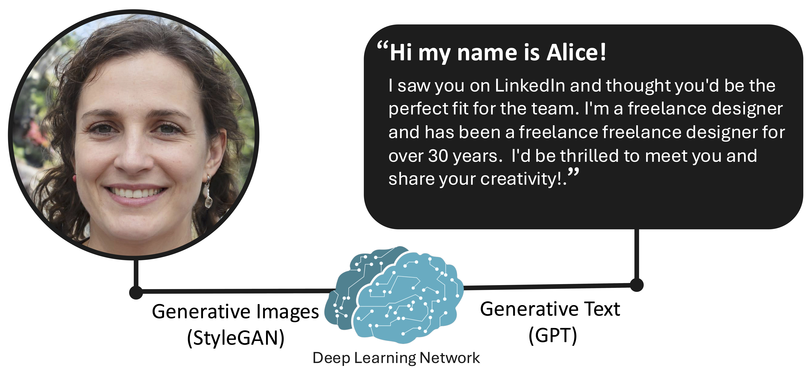

<div class='container'>
    <header class="masthead text-center">

      
      
      <h1 font-family="Varela Round" style="font-weight:200;" ><span class="acronym">H</span>uman <span class="acronym">A</span>spects of cyber <span class="acronym">P</span>rotection & <span class="acronym">P</span>rivac<span class="acronym">Y</span></h2>
<br>
<br>

<div style="text-align:left">
<h2>Who are we?</h2>
<p>
<a href="/people">We are a group of researchers</a> discovering how to better protect people by understanding how humans interact with software. While we work on many areas of computer security, we primarily focus on the quickly evolving landscape of Machine Learning (ML), understanding how to defend against new forms of ML-enabled abuse, and how to harness ML-powered tools for security systems.
</p>
<p>
  We use a combination of social science methods and software evaluation techniques. In human-subject work, we learn user perceptions with observational techniques (e.g., interviews/surveys) and discover how factors influence security with controlled experiments. In software, we use benchmarking techniques to rigorously compare systems. Combined, we holistically assess software security via technical and usable metrics.
</p>
<p>

  <a href="https://jaronm.ink">Jaron Mink</a> directs the Happy Lab at <a href="https://www.asu.edu/">Arizona State University</a> in the <a href="https://scai.engineering.asu.edu/">School of Computing and Augmented Intelligence</a>.
</p>
<p>
  <b style="color:salmon;">
Our lab is actively recruiting PhD students, master's students, and undergraduates! If you're interested in joining the lab, <a href="/apply">learn more here</a>! 
</b></p>
	    <!--
      <i>ML-Enhanced Social Engineering and Abuse<br>ML-Powered Security Systems.<br>
	Ethical and Trustworthy ML.<br></i>
      
        <span style="display: block; margin-bottom: 1em"></span>

      <a href="https://github.com/KordingLab"><i class="fa fa-github"></i> KordingLab</a>&nbsp;&nbsp;&nbsp;
      <a href="https://twitter.com/KordingLab"><i class="fa fa-twitter"></i> KordingLab</a>&nbsp;&nbsp;&nbsp;
      <a href="mailto:kording@upenn.edu"><i class="fa fa-envelope-o"></i> kording@upenn.edu</a>
      -->
      
	  
	  
      <div class="w3-container" style="   background: #f0f8ff; padding: 25px; border-radius:10px; border: 1px solid #5d8aa8">
        <div style="text-align:left; padding: 0px;">
          <h3> Recent News </h3>
          <span style="display: block; margin-bottom: 1em"></span>
          <div class="news">
	    <!-- Display the last year of news -->
              {% capture now %}{{'now' | date: '%s' | minus: 31557600 %}}{% endcapture %}
              <ul style="list-style-position:outside;padding-top:20px;padding-left:20px;padding-right:20px;">
		
                {% for news in site.data.news %}
		{% capture date %}{{news.date | date: '%s' | plus: 0 %}}{% endcapture %}
		{% if date > now %}
                    <li>
                      <span>
                        <span style="font-family: sans-serif"><u>{{news.date}}</u>:</span> {{ news.details }}
                      </span>
                    </li>
                  {% endif %}
                {% endfor %}
              </ul>
          </div>
        </div >
      </div>
      


      <span style="display: block; margin-bottom: 3em"></span>

<h2>Our Research Directions</h2>
<p>
Our work discovers how human interaction impacts ML security in two ways: How human factors can be 1) exploited to reduce security and 2) harnessed to improve security. Since ML-enabled abuse is becoming increasingly common, we investigate how lay users perceive and react to new attacks, e.g., how social media users react to deepfakes. As ML is beginning to be applied in security-critical systems, we evaluate how usable these tools are for technical users, e.g., how easy it is for ML developers to apply security defenses.
</p>
<br>
<h3>Mitigating Deceptive AI-Generated Content [<a href={{ site.deepphish_page }}>1</a>, <a href={{ site.mink_chi_24_pdf }}>2</a>]</h3>

<p>
AI-generated (AIG) content represents a pressing societal concern; it can be used to create fake personas or impersonate real persons to produce misinformation, conduct scams, or destroy reputations. As these attacks often rely on how real people perceive this content, understanding this perception is critical to understanding the harms of AIG content, and potential mitigations. Our lab researchs how people understand and perceive this emerging threat, as well as whether human-in-the-loop centered defenses are effective.

<h3>Integrating ML in Secure Systems [<a href={{ site.mink_usenix_23_pdf }}>3</a>, <a href={{ site.mink_ieee_23_pdf }}>4</a>] </h3>

<p>
  ML is increasingly being implemented in a variety of security-sensitive applications, with researchers often predicting practitioners’ needs and security concerns; however, little work has investigated the accuracy of these predictions, and the practical utility of these systems in the field. Our work bridges this gap by discovering what needs security and ML practitioners have in ML-enabled applications. Overall, our work discovers if academia's research agenda misaligns with practitioner requirements, ways to rectify them, and new paradigms for human-ML interaction in cybersecurity settings. 
</p>
<br>
<h3>Accessible Cybersecurity Education [<a href="https://pwn.college">pwn.college</a>]</h3>

<p>
  We're excited to work with the <a href="https://sefcom.asu.edu/">SEFCOM Lab</a> to improve and evaluate scalable cybersecurity education at pwn.college.
  We're currently creating modules for practical adversarial machine lessons, discovering areas of improvement for courses, and improving personalized tutoring.
  Additionally, we work on how to improve diversity and inclusivity in security research and cybersecurity workforce at large.
</p>


<h4><a href="/apply">Want To Get Involved? Join Us!</a></h4>

</div>

      <!--

      <a class="twitter-timeline" href="https://twitter.com/KordingLab" data-widget-id="695051708246941697">Tweets by @KordingLab</a>
      <script>!function(d,s,id){var js,fjs=d.getElementsByTagName(s)[0],p=/^http:/.test(d.location)?'http':'https';if(!d.getElementById(id)){js=d.createElement(s);js.id=id;js.src=p+"://platform.twitter.com/widgets.js";fjs.parentNode.insertBefore(js,fjs);}}(document,"script","twitter-wjs");</script>
      -->
      <span style="display: block; margin-bottom: 3em"></span>
      School of Computing and Augmented Intelligence at Arizona State University<br>
      ASU Brickyard Engineering (BYENG), 699 S Mill Ave, Tempe, AZ 85281
      <span style="display: block; margin-bottom: 3em"></span>

    </header>
</div>
